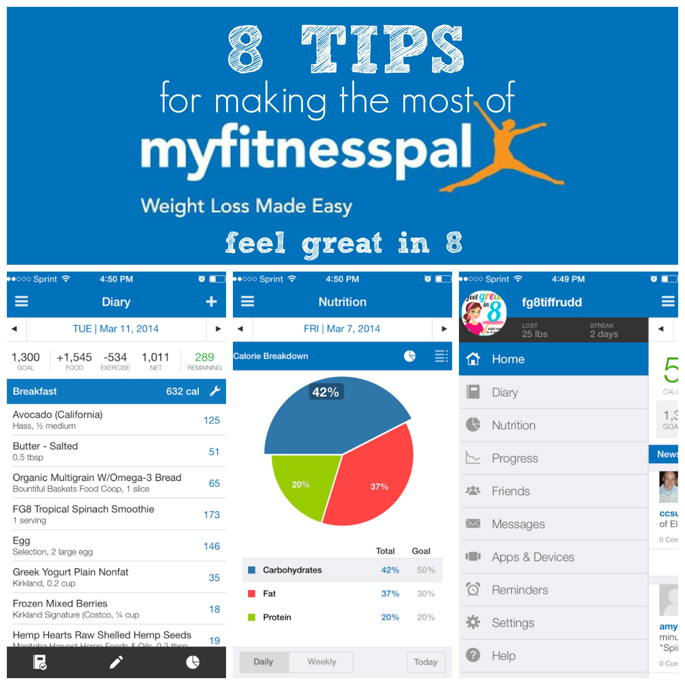

Crush the Calories: Cutting Tips for a Chiseled Physique
"Cutting" is a term used in the fitness world to describe the process of losing body fat while preserving muscle mass. It's a common goal for people who want to get leaner and achieve a more defined physique. The idea behind cutting is to consume fewer calories than your body burns, which puts you in a "caloric deficit" and forces your body to use stored fat for energy. This process can be challenging, but with the right approach, it's possible to achieve your fat loss goals in a healthy and sustainable way. In this guide, we'll share some tips and strategies to help you go on a successful cut and achieve your desired body composition.

Tips for Going on a Cut
Calculate your caloric needs
To go on a cut, you need to be in a caloric deficit, which means consuming fewer calories than your body burns. Start by calculating your basal metabolic rate (BMR), which is the number of calories your body burns at rest. Then, factor in your activity level to determine your total daily energy expenditure (TDEE). To lose weight, aim to eat 10-20% fewer calories than your TDEE.
Focus on nutrient-dense foods
While on a cut, it's important to make every calorie count. Choose foods that are nutrient-dense, meaning they provide a high amount of vitamins, minerals, and other beneficial nutrients per calorie. This includes lean proteins like chicken, turkey, and fish, as well as fibrous vegetables like broccoli, spinach, and kale.
Monitor your macronutrients
In addition to monitoring your overall caloric intake, it's important to track your macronutrients, which include protein, carbohydrates, and fat. Aim to consume a moderate amount of protein to preserve muscle mass and fill up on fibrous carbohydrates and healthy fats to keep you feeling full and satisfied.
Stay hydrated
Drinking plenty of water is important for overall health and can also aid in weight loss. Aim to drink at least 8-10 cups of water per day and consider drinking calorie-free beverages like tea or coffee to help curb hunger.
Incorporate exercise
While diet is the most important factor in weight loss, incorporating exercise can help accelerate fat loss and improve body composition. Aim to include both cardio and strength training in your workout routine to burn calories and preserve muscle mass.